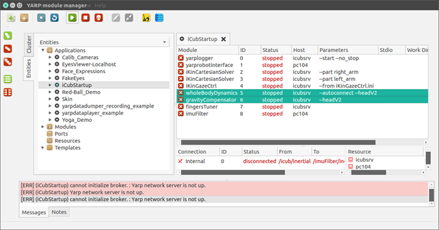

Force Control on iCub
iCub is not equipped with joint-level torque sensors, but only with four 6-axis F/T sensors mounted on the arms and on the legs. iCub thus exploits a model-based approach based on a modified Newton-Euler algorithm (Ref: iDyn library ) in order to estimate joint-level torques from the four proximal sensors. The controller is thus distributed in three different levels:
-
wholeBodyDynamics(application level): the modules takes the measurements from the 3DOF orientation tracker placed inside iCub's head and from the four F/T sensors of the robot limbs to make a model-based estimation of joint torques, with the hypothesis that external forces are applied only on the end-effector (wrist/ankle joints). For further information refer also to the wholeBodyDynamics documentation -
yarprobotinterface(middleware): it sends (through yarp ports) the 6-axis F/T sensors measurements to the wholeBodyDynamics module and receives from it the computed joint torques. The estimated joint torque measurements are sent to the boards which perform the control. -
motor control boards(firmware level): The control boards receive the computed estimation of the joint torques from iCubInterface and implement different PID control algorithms in order to track the desired position/torque commands. The type of control (i.e. position/torque/impedance control etc.) of a specific joint can be changed runtime by sending an appropriate command to the control board.
Ports and connections
wholeBodyDynamics and yarprobotinterface communicate through yarp ports:
iCub ports are:
/icub/inertialprovides 3DOF orientation tracker measurements/icub/<part>/analog:oprovides calibrated F/T measurements (an offset is present, due to the stresses of mounting)/icub/joint_vsens/<part>:iacquires joint torque estimation from wholeBodyDynamics module
wholeBodyDynamics ports are:
/wholeBodyDynamics/inertial:ireceive inertial data/wholeBodyDynamics/<part>/FT:ireads F/T data from the analog ports/wholeBodyDynamics/<part>/Torques:oprovides joint torque measurements
The port connections required to run force control are thus:
/icub/inertial->/wholeBodyDynamics/inertial:i/icub/<part>/analog:o->/wholeBodyDynamics/<part>/FT:i/icub/joint_vsens/<part>:i->/wholeBodyDynamics/<part>/Torques:o
Connecting all these ports for all the robot parts (left_arm, right_arm, left_leg, right_leg) is a laborious process and it's easy to make mistakes while typing the port names. For this reason, it's not recommended to make the connections manually, using the yarp connect command. Instead you can easily make all the necessary connections using the provided automated scripts.
The key concept to comprehend how force control works and how to use it is the concept of control mode. The control mode represents the current control algorithm that is running on the firmware of the control boards to control a specific joint. For example, the position control modes implements a PID control that tracks the commanded trajectories, while the impedance control realizes a compliant position control by computing the reference torque that an inner torque control loop has to track, given an equilibrium position and the stiffness of a simulated spring. The control mode of a joint can be changed online, during the execution of your application, using the apposite yarp interfaces. In this way you can assign different control modes to different joints in order to obtain the desired behaviour (e.g. you can set some joints in position control mode to obtain a 'stiff' behaviour and other joint in impedance control mode to obtain a compliant behaviour).
Five different control modes are currently implemented in the firmware of the control boards:
Position control mode
Typical Inputs
desired position, trajectory velocity
Position control is the standard control mode. In this control mode, the motors PWM is computed using a PID controller the receives in input the desired joint position and the current measurement from the joint encoders:
Note that when you command a new joint position, you are not instantaneously assigning the reference qd in the above formula. Instead, a mimum jerk trajectory generator takes in input your commanded position and the desired velocity, and produces a smooth movement creating a sequence of position references qd tracked by the PID controller.
Velocity control mode
Typical Inputs
desired velocity, acceleration
Velocity control mode allows you to control the robot by assigning a desired volocity/acceleration to a joint. The control law is the same of position control, but in this case qd is not directly controlled by the user, but it is obtained from the integration of the commanded user velocity. Also in this case a minimum jerk profile generator is used.
Torque control mode
Typical Inputs
reference torque
Torque control mode allows you to directly control the robot joints torque: Pid trq.jpg In this case the motors PWM is computed using a PID controller the receives in input the desired joint torque and the current measured joint torque. Additionally, a PWM offset can be added to the output of the control algorithm. If both the commanded reference torque and the PWM offset is set to zero, the robot joint will be free to be moved in the space (eventually it will move down as an effect of the gravity acting on that joint).
Openloop control mode
Typical Inputs
motor PWM
Openloop control mode allows you to directly control the joint motor, assigning directly the PWM (bypassing the PID controller)
Impedance Position control mode
Typical Inputs
desired position, trajectory velocity + desired joint stiffness and damping
Impedance control mode allows you to control the joint position and its compliance. In particular, you can control the equilibrium position of a virtual spring (using the standard yarp::dev::IPositionControl interface) and its stiffness/damping (using the yarp::dev::IImpedanceControl interface). The control is implemented in the DSP firmware as follows: Pid imp.jpg Firstly, a reference torque is computed, accordingly to the input position and the commanded stiffness/damping parameters (Hooke's law). Secondly, the reference torque is tracked by a PID algorithm (same gains used by the torque control mode). By tuning the stiffness parameters, you can thus make the robot joint feeling like a hard or soft spring, while maintaining control on the desired joint position (note that the same mimum-jerk trajectory generator used by the position control is also used when position impedance control is running).
Impedance Velocity control mode
Typical Inputs
desired velocity, acceleration + desired joint stiffness and damping
The impedance velocity control mode is the corresponding impedance mode using velocity control. The control law is the same of the impedance position control, but in this case qd is not directly controlled by the user, but it is obtained from the integration of the commanded user velocity (also in this case minimum jerk profile generator is used).
Idle
Typical Inputs
none
This is not a real control mode, but represents the status of a joint in which the control is currently disabled (both because PWM has been deliberately turned off by the user or because a fault (e.g. overcurrent) occurred).
NOTE 1: The control mode of a joint can be set using the yarp::dev::iControlMode interface.
NOTE 2: When you send movement commands (i.e. position/velocity commands) to a joint, the obtained behaviour will change depending on the current control mode of the joint (e.g. a position command in position control mode will generate the standard stiff trajectory, while the same command executed in impedance control mode will change the equilibrium point of the simulated spring).
Start Force Control
Run wholebodydynamics on the robot
The first step to achieve joint level torque control / playing with torque & impedance interfaces / running the demoForceControl module is to start the wholeBodyDynamics module and connect the corresponding ports. Note that if this module is not running and the ports are not properly connected, any attempt to change the control mode of the joints to force/impedance control mode will result in a protection fault (motor going in idle state).
Run gravityCompensator on the robot
The gravityCompensator is included in the same script used to launch the wholeBodyDynamics module (i.e. wholeBodyDynamics.xml). The module estimates the gravitational term acting on joints due to links weight and generates a feed-forward term which can be used to compensate the gravity when the joint is torque/impedance control mode. This module is particular useful if you want to control the robot in impedance position mode with low stiffness values. In this case, in fact, the accuracy of position control loop will be poor, because the gravity will act on the low-stiffness joint preventing it to reach the commanded position. On the contrary, if the gravity compensation module is running, the feed-forward term will help the joint to reach the commanded position even with low stiffness values.
Additional notes
The torques estimation is perfomed by the iDyn library which includes a mechanical model of the iCub robot based on the CAD parameters. This means that a small drift can be present, due to the fact that the model obtained from the CAD slightly differs from the real iCub (consider the weight of the power cables, the additional skin etc.)
If the joint stiffness is zero and gravityCompensator is off, the gravity will make the joint to fall down regardless the commanded position. In this case, running the gravityCompensator is the only way to track to commanded position.
Be particular careful in this situation: consider a joint in impedance position control mode, with the gravity compensator turned off and low joint stiffness (e.g 0.01Nm/deg). In this case the position tracking error will be high: for example if you command a position of 30degrees, due to the gravity effect and the very low stiffness, the joint could able to reach only the position at 10 degrees (so the tracking error is 20 degrees). In this condition the impedance control loop is computing a command torque T=0.01*(30-10)=0.2Nm. Now, if you suddenly increase (with a step) the joint stiffness to a high value (for example i.e. 0.6Nm.deg) you obtain a command torque of T=0.5*(30-10)=12Nm which is a huge torque. The joint will move very fast (and joint tendons may be also damaged). In this case the solution is to increase the stiffness gradually, in order to make the position tracking error decrease before setting the joint in high-stiffness mode or turning on the gravity compensator. With the gravity compensator enabled the position error will be limited to few degrees even with low stiffness values.

Demo Force control
Run modules Using yarpmanager
On the server run yarpmanager and run :


Open the iCubStarup application amd run yarprobointerface , yarplogger (optional to log messages) wholeBodyDynamics and gravityCompensator modules
Run the demo
-
First of all check if torque sensors are correctly reading data; to do that (with the robot in the calibrated position) run this command on the laptop server:
yarp read ... /icub/left_arm/analog:o
-
You’ll see a data dumping in the shell, try to move the part by hand and see if numbers are changing. Repeat the command above for all parts having a sensor (typically left_arm, right_arm, left_leg, right_leg, left_foot, right_foot)
-
In the yarpmanager, double click on iCubStartup
- Select
wholeBodyDynamicsandgravityCompensatormodules, right click and run

⚠️ If you have problems opening the WholeBodyDynamics module, double check that in the file icub_all.xml there is:
portprefix ='icub'
after the RobotName, in the first lines.
- Open yarpmotorgui and check the torque value reading for affected joints, typically they should read as follows:
| Part | Joint 0 | Joint 1 | Joint 2 | Joint 3 | Joint 4 |
|---|---|---|---|---|---|
| Arms | -1.5 | +1.2 | -0.2 | +0.6 | 0 |
| Legs | +0.2 | +0.1 | 0 | +0.1 | / |
If values are not close to the table above, stop running and check sensors.
- Now run
demoForceControlicub@icubsrv:~$ demoForceControl
üî¥ Do not apply force to the torso (experimental)!

For each part to test, first select soft spring, move it by hand checking a right force response. Then repeat with medium and hard spring.
⚠️ Be sure to move the part applying the force by hand respecting the following :
| Part | Point where to apply the force |
|---|---|
| Arms | Forearm/wrist |
| Legs | Ankle |
wholebodydynamics YARP device
The wholebodydynamics YARP device (contained in the C++ class yarp::dev::WholeBodyDynamicsDevice)
is reading measurements of the embedded force-torque sensors, of the joint position and low-level estimates of joint velocity and accelerations and of
one IMU mounted in the robot, and from this reading is estimating the external force-torques and internal joint torques of the robot.
Differences with respect to the wholeBodyDynamics YARP module
From the user perpective, the main differences w.r.t. to the wholeBodyDynamics YARP module are:
* The estimation is performed using the iDynTree library, replacing the use of the iDyn library.
* The model of the robot and of the sensor is loaded from a URDF model, as documented in https://github.com/robotology/idyntree/blob/master/doc/model_loading.md.
This permits running the estimation algorithm on arbitrary robots without modifying the code, as in the case of the iCubHeidelberg01 that w.r.t. to normal iCub is missing the head and the arms.
* The RPC interface is implemented using YARP Thrift.
This means that the 0 shorthand for performing the calibration of the force-torque offset is not supported anymore. The calib command however is compatible between the wholeBodyDynamics
YARP module and the wholebodydynamics YARP device, so please use that one in your code to be compatible with both interfaces.
* The functionality of the gravityCompensator module are now integrated in the wholebodydynamics device, and can be enabled/disabled using the parameters in the GRAVITY_COMPENSATION group.
Furthermore, the gravity compensation torque offset is not sent anymore to the board if the axis control mode is set to VOCAB_CM_TORQUE .
Run the wholebodydynamics YARP device
Being a YARP device, it can run on the robot main PC in the robot's yarprobotinterface, or on an external pc using a separate yarprobotinterface.
The wholebodydynamics device requires robot-specific configuration files, and currently this configuration files are provided for the following robots:
YARP_ROBOT_NAME |
Number of F/T sensors | Internal electronics architecture | Support for running wholebodydynamics on the robot's yarprobotinterface |
|---|---|---|---|
icubGazeboSim |
6 | N/A | NO |
iCubDarmstadt01 |
6 | ETH | YES |
iCubGenova02 |
6 | ETH | YES |
iCubGenova04 |
6 | ETH | YES |
iCubNancy01 |
6 | ETH | YES |
iCubHeidelberg01 |
4 | ETH | YES |
iCubGenova01 |
6 | CAN | NO |
iCubGenova03 |
6 | CAN | NO |
iCubParis01 |
6 | CAN | NO |
iCubParis02 |
6 | CAN | NO |
Note however that over time the configuration of this robots can change, and the configuration files contained in this repository may not be updated. Please check the status of the configuration files with the maintainer of this repository before using this configuration files.
Run wholebodydynamics on an external PC
This is the recommended procedure in general. To launch the wholebodydynamics on an external PC running a *nix based OS, just run:
YARP_ROBOT_NAME=<yarp_robot_name> yarprobotinterface --config launch-wholebodydynamics.xml
<yarp_robot_name> is the robot for which you are launching the estimator.
For example, if you want to run the wholebodydynamics for the Gazebo simulation, you will need to run:
YARP_ROBOT_NAME=icubGazeboSim yarprobotinterface --config launch-wholebodydynamics.xml
Note that you can avoid preprending the YARP_ROBOT_NAME=icubGazeboSim environmental variable.